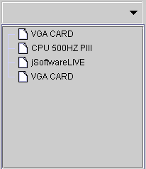
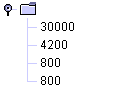

|

コンボツリーコンポーネント (Combotree component)

共通プロパティ (common properties)
Dot
code 節構造 (dot code structure)
データソース
(data source)
データソース検索
(lookup data source)
イベント
(event)
フォーミュラ
get/set プロパティ
(formula get/set properties)
データソース (data source)
-
データソース
(data source)：データソース選択。
-
データフィールド
(data field)：データフィールドの選択。
-
編集可
(editable)：直接節(node)を入力するか編集することも可能です
。編集可能モードの下，ツリーのエディットボックス (Edit
box)に表示される資料は関連データソース (lookup data source)
のデータフィールド (data field)です。
-
編集不可 (read
only)：

-
編集可能 (editable)：


Root 表示しない。

▲Top
関連データソース (lookup
data source)
-
選択された時，関連データソースへ移動：ユーザはツリーコンポーネント
(Tree component) の節 (node)を選択すると，データソースは
(current record) を節のレコードへ移動します (move to) 。
-
関連データソース
(lookup data source)：データソースの選択。
-
関連データフィールド
(lookup data field)：データフィールドの選択。
-
Dot
code フィールド (dot code field)：レコード (record)
はどの節のフィールドにあるのを表示。
-
フォーミュラ表示
(display formula)：フォーミュラで節資料の表示 (node)。
-
Icon資データフィールド：節の前に(node)マーク図を表示します，オプション (option)
プロパティ。
-
順序フィールド
(sequence field)：同じレベル (level) 中の節 (node)は順序枠で順並べます。
-
初期選択アイテム
(initial selection)：関連データソースが初期化された時，選択を削除します。
▲Top
イベント
(event)
-
アクションイベント (action event)：ユーザはクリック(clicked)で節を選択する時に，イベントを起動します (fire event)。
-
Gain Focus
イベント：Focus
をコンボツリーに移動するとイベントを起動します 。
-
Lost Focus イベント：Focus
をコンボツリー外に移動するとイベントを起動します
。
-
エディットアクションイベント (edit action event)：プロパティが編集可能の場合，ユーザはエディットボックス
(Edit box) 中に Enter キーを押した場合，イベントを起動します (fire event)。
-
エディットチェンジイベント
(edit changed event)：プロパティが編集可能の場合，エディットボックス内の
(Edit box) 値が変更された場合，イベントを起動します (fire event)。
▲Top
フォーミュラ
get/set プロパティ (formula get/set properties)
SetProp("コンポーネント名",
"プロパティ", 値) ：プロパティ設定。
SetProp("コンポーネント名",
"プロパティ", 値1,
値2)：プロパティ設定。
GetProp("コンポーネント名",
"プロパティ")：プロパティ読み取り。
| Set
Properties |
| プロパティ
(Properties) |
値1
(Value 1) |
値2
(Value 2) |
説明 (Descriptions) |
| enabled |
1 有効，0 無効 |
|
有効か無効。 |
| setfocus |
1 Focusの設定 |
|
Focusの設定。 |
| visible |
1 表示，0 隠し |
|
表示か隠し。 |
| repaint |
1 再描き，2 即時に再描き |
|
再描き。 |
| revalidate |
1 ツリーコンボの再建 |
|
ツリーコンボの再建，データソースから節への資料を再度ロード。 |
| reload |
1 ツリーコンボのリロード |
|
ツリーコンボのリロード。 |
| leafonly |
1 終点節の選択のみ，0 終点節と限らない |
|
終点節の選択のみ可能。 |
| selected |
データ資料RecordNo と RecordNo節のＮｏ一致 |
|
データ資料RecordNo と RecordNo節のＮｏ一致。RecordNo = 0
，選択を削除。 |
| Get
Properties |
| プロパティ
(Properties) |
転送
(Return value) |
説明 (Descriptions) |
| isenabled |
1 有効，0 無効 |
有効か無効。 |
| isvisible |
1 表示，0 隠し |
表示か隠し。 |
▲Top
Copyright © 2001~
2004 Probe Technology . All Rights Reserved.
Questions, comments,
and suggestions to Service@probe.com.tw
|